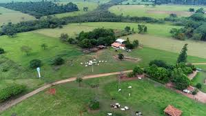

Fica claro que, muitas vezes, a desinformação sobre os produtos gerados no campo impede que os moradores das cidades compreendam todo o valor e o esforço envolvidos na produção rural. Essa falta de conhecimento pode gerar preconceitos, desvalorização dos alimentos e até desperdício. Promover a conexão entre o campo e a cidade, por meio de campanhas educativas e feiras de produtores, é fundamental para valorizar o trabalho do agricultor e incentivar o consumo consciente.

"Aprendi a valorizar cada alimento ao visitar uma pequena fazenda. É um trabalho de muito esforço e dedicação!" — Joana, estudante
"Levar energia elétrica até áreas rurais foi um marco na vida da nossa comunidade. Mudou tudo." — Sr. João, agricultor
"Agora entendo como a cidade depende do campo para continuar se desenvolvendo." — Carlos, professor